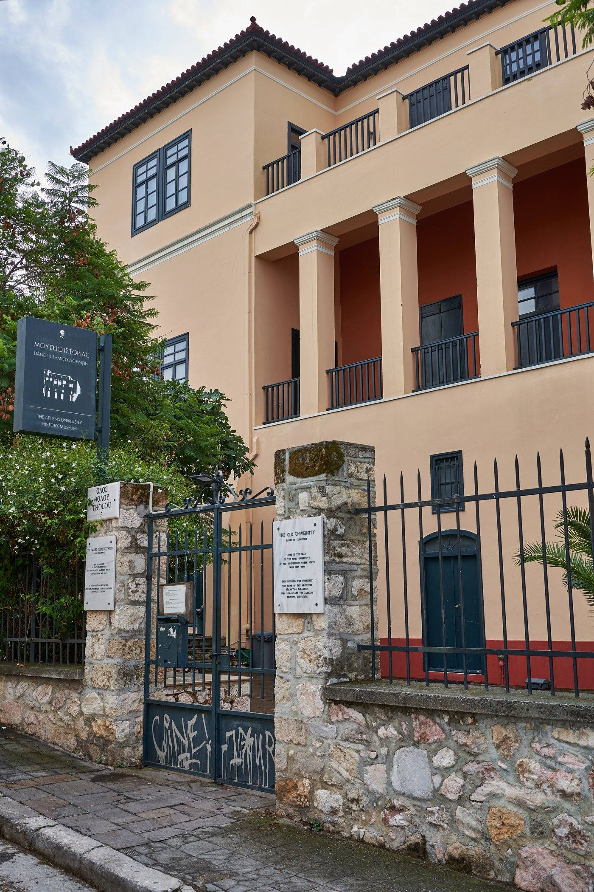

Venue & travel
3DOR 2027 is hosted at the Museum of the History of the National and Kapodistrian University of Athens, in the heart of Plaka.

Venue
- Built
- 1837-1841
- Architects
- Kleanthis & Schaubert
- Museum since
- 1987
3DOR 2027 is hosted at the Museum of the History of the National and Kapodistrian University of Athens (ΜΙΠΑ), in the building that housed Greece's first university from 1837 to 1841. In the heart of Athens, right below the Acropolis, the building was originally the home and architectural office of Stamatios Kleanthis and Eduard Schaubert, the architects behind the first urban plans for the newly founded capital. It became a museum in 1987.
- Address
- Tholou 5, Plaka, 105 56 Athens
- Website
- historymuseum.uoa.gr
More photos of the museum are on its own website and social channels, linked above. See the contact page for a map.
Getting to Athens
Athens International Airport “Eleftherios Venizelos” (ATH) is the main gateway, connected to the city centre by metro line 3, suburban rail and express buses. Within the city, three metro lines plus trams and buses cover most districts.
Early September in Athens is typically warm and dry, with daytime temperatures often around 30 °C.
Accommodation
To be announced
Suggested hotels near the venue, and any negotiated rates, will be listed once the venue is fixed.
Registration
To be announced